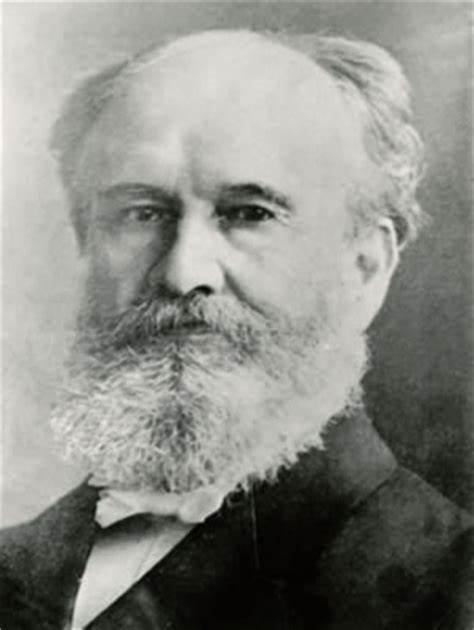

宣信 Albert B.Simpson (1843-1919)

诗人小传
在近百年以来宣信弟兄所带给教会的属灵影响有多大？是我们无法估计的。他是一个伟大的属灵人，他也是一个最伟大的传教士之一。他是一个有明显神医恩赐的人，他又是一个伟大的圣诗作者。直到今天在全球各地追求属灵生命的圣徒中间，难得有人不是直接或间接的受他的影响。直到今天，我们读他的著作或唱他的诗歌，都能感觉到他身上所发出来的热和力；但他真正的价值，只有到永世的时候才能完全的显明出来。
宣信在一八四三年十二月十五日生于Prince Edward Island 一个很敬虔的家庭中。他父亲James Simpson先生，是一个非常爱主并且把一生完全奉献给主的人。他不仅自己追求主，而且对宣信弟兄要求得很严格。宣信从小身体衰弱多病，又加上父亲严厉的训练，使他成为一个畏缩害羞的孩子。每天早晨起来，他父亲都带着他们读圣经和祷告。对他们每天圣经的功课要求得非常严厉，因此使他感觉宗教是十分枯燥乏味的事。在十四岁那年，神的怜悯终于临到了他：因为他在高中的时候，过于用功，又因体质不好，使他受压过重。经过这样长期的压力，以致生病，当他回到父亲家里，病势转重。忽然感觉有恐惧抓住他，并眼前金光闪烁，使他昏眩，好像天都要崩坠下来，他的神经几乎全部崩溃了。他以为自己临近死门，发抖得非常厉害，有一夜之久差不多像死去一样。医生告诉他，他不能再读书了，因神经系统已受伤，有生命之虞。经过长期的痛苦，到了有一天似乎无法挽救了，那时他觉得非常需要主，要求他父亲为他祷告。他知道他自己还没有得救，看着时钟一点一点的过去，他非常害怕，好像一个将亡的人，整夜都不敢睡觉，怕失去救恩临到的机会。有一天他曾在牧师的书房里，看到一本书叫《圣洁的福音奥秘》，他打开看的时候，眼睛注视在一段话语上，那段话为他开启了永生之门：“凡你们能作的第一件最好的事，就是相信主耶稣基督。若没有作这件事，你所有的行为、祈祷、眼泪以及一切的立志都是徒然的。相信主耶稣基督就是信他照他自己的话，此时此地就收留你，拯救你，因他曾经说过‘到我这里来的，我必不丢弃他。’”正当这时候，神的光忽然临到他，如同临到大马色路上大数的扫罗一样。他立即跪下，仰面注视在主的身上，说：“主耶稣，祢曾说：凡到我这里来的，我必不丢弃他。祢知道我何等长的时间，并且何等的迫切，一直试着要到祢的跟前，但我不知道要怎样的来；现在我真心的来到祢的面前，并且我敢相信祢已接受了我，也拯救了我，现在我是祢的儿女，祢已赦免了我的罪。”当他祷告过了之后，得救的把握是那样牢靠的临到他的心中，他的病也得了医治。
从那次以后，他不仅病得了医治，灵魂得了拯救，并且也确实的蒙了主的呼召。从小他父亲给他的那些属灵教育，和那样虔诚并完全的把他献在主的手中，现在在他身上都发生了极其有力的影响。他在十七岁的时候，就开始为主作话语的职事。使很多人并他的家人都惊奇，这个小孩子在讲台上能这样被主用。
一八六一年十月，他进到诺克斯书院（Knox College）读书，准备作传道的工作，在学校中就显出他的聪明、才干和恩赐。有一位属乎神的人米契尔先生，在学校中就看出宣信将来会成为一个神所大用的器皿，因为他有特殊的恩赐，和热切追求主的心情，并且严格的操练自己。在神的道路中，他一直往前进步，所以他没有修完整个的课程，就得到了讲道的执照，常在主的讲台上为主作见证。
在那段时间中，神给他一个特别的训练，使他将来能过信心的生活。很多时候他身上一文钱也没有，但他坚定的相信神是信实的，对那些敢投靠在他怀中的人，永远不失信！他也非常努力的用功，为着要得到奖学金，以完成他的学业。
属灵转机
宣信在生命上有三个大的转机，这些转机不仅给他的生活和事奉带来新的起头，也使他对基督徒生活的看法和所传的信息有了极大的转变；并且这些转机也叫他奔跑在一条孤单的道路上面，多少亲友和同伴，因为不领会他的经历与他分离。他第一次的转机是在十四、五岁的时候，主使他经历了如何藉着主耶稣与神和好。在那以前他在黑暗里摸索，灰心绝望达十个月之久。有一天，主把他从黑暗的河流里带领出来，他接受了主耶稣作他个人的救主，圣灵进入他里面，他重生得救了。在他二十一岁出来事奉主的时候，他向神非常忠诚，每次传讲因信称义的真理，都像马丁路德一样，满了膏油和能力。但他对属灵生命更深的经历，还没有多少认识。因此不久就落在罗马书第七章的情形中，天天挣扎，过着波浪式上下不定的生活。行为失败，在事奉上也缺乏属灵的能力。他知道以赛亚书中说：直等到神的灵从上面浇灌下来，旷野就变成肥田，肥田变成树林。但他却得不着，从前有果效的工作，也忽然间变成枯干，使他心里感觉非常孤单和痛苦。从此他寻求圣灵的充满。到了一八七四年，在一个黑夜里，在他最痛苦的时候，他得着了第二次的转机。那时他把自己再次完全奉献给主，没有保留的，没有条件的降服在主的脚前。并且对主说：“主！我今撇下所有事物，背起十架跟随祢……”。那时圣灵的喜乐就大大的充满了他，神已悦纳了他的奉献，使他成为一个小小的殿，让神自己的生命和荣耀内住在里面。他和主紧紧联结在一起，不仅主的灵作了他的灵，就是主的身体也成了他的身体。使他必死的身体，因着复活的生命都活过来了。他看见成圣不是自己改良，也不是自己能达到完全；乃是基督在他里面成了他的圣洁。有一首很有名的诗歌，就是这时候写出来的：“前要的是祝福，今要主自己；前要的是医治，今要主而已；前我贪求恩赐，今要赐恩者；前我寻求能力，今要全能者。”从此他的职事有了一个很大的转机，他觉得现在才真正开始了他的职业。这次的转机把他牵到更深的孤单里，许多亲友与他远离，千百位信徒和同工们，素来他们是他所敬爱的，他也是他们所敬爱的，现在他们却与他隔绝了！到了一八八一年的夏天，他来到第三次转机，主把他带到那个有福的境地——基督的丰满里面，也就是神为他子民所存留的那一个安息。从那时起他全心要主，全心倚靠主，主耶稣成了他的一切。那一次的转机是那样发生的：他心里满了饥渴，到处寻求主。有一天他跑到芝加哥城，慕迪先生在那里赴同工的退修会，在一次聚会里，有一位又简单又热诚的弟兄站起来见证说：“我本想得着慕迪先生的帮助。但昨夜，我看见主耶稣。我一直注目仰望他，我就感觉今后一生，除了主之外，我真无求，也无所要。”这些话深深的感动了宣信的心。“你所要的主耶稣，你到他那里就好了。”那晚他立刻搭火车回家去了。关上门，跪在主前等候主，直到主充满了他的心。感谢神！他里面满了喜乐说：“我已经看见耶稣，我心平安快乐，我已经看见耶稣，一切得了供应，我已能看见耶稣，我已心满意足，主是我一切。”
现在说到他另外一个伟大的职事：神为着身体的医治。以往他从来不晓得这方面的亮光，二十年来，他一直被身体的软弱和疾病所困扰，他十四岁那次神经崩溃，虽然得了主的医治，但他对主医治的信心还是那样软弱不稳固。以后他又得了心脏病，他出去传道的时候，口袋里常带着阿摩尼亚，和神经镇静剂。他不能没有这些东西。当他爬高的时候，他常觉得昏眩要倒下来的样子。当他给人行安葬礼的时候，好像觉得自己要掉到那坟墓里去。有一次他的医生警告他不可能再活过几个月了；那年夏天他在退修会中，意志非常消沉。他听见人们在那里歌唱：“我们主耶稣是万主之主，无人能像他能如此为我们工作。”这声音一次又一次的唱着：“无人像他为我工作，无人像他为我工作……”他就把自己带到主的面前，让主的工作在他的身上。并且在那次退修会中，他也听着很多人的见证，如何简单的相信主的话就得了医治，正像他们接受主的救恩一样。这件事驱策他回到圣经中去，他在每一处圣经中仔细的考察，他没有从人得到帮助，乃是单独在主脚前并敞开的圣经中寻求，终于他找到了基督荣耀福音的光。为着一个充满罪，为罪受苦的世人，他的眼睛被开启了。他说：“这已经足够了。”从那时以后，神医治的光那样强烈的照亮在他心中一生之久，不仅自己活在神的医治中，并且把这恩赐带给千万的人们，叫多少患病的人得到了拯救。到今天我们仍然能从他所看见的亮光中得到帮助。
但他的身体却是一直很软弱，天天靠着主的能力活着。有一次出去做工的时候，在船上忽然发高烧，并感觉得痛苦，弟兄们很担忧的围绕他，一直为他祷告，也问他说：“我们能为你作什么？”在这样危险的情形中，宣信非常幽默的对他们说：“你们能为我作的最好的一件事就是对我说，晚安，并把我交在神的手中。”弟兄们就听他的话出去了。到第二天早晨，当他从房间中出来的时候，弟兄们就发现他不仅病得了医治，而且在圣灵中那样新鲜，充满了亮光和能力。在他的诗歌当中，有许多诗歌是说到神医的事。